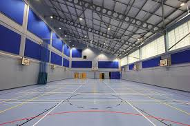

Indoor Sports
Indoor sports are games and physical activities played within a covered
space such as gymnasiums, halls, or indoor arenas. These sports are less
dependent on weather conditions, making them enjoyable year-round. They
help improve concentration, agility, and coordination. Popular indoor
sports include badminton, table tennis, chess, basketball, and volleyball.

Rules of Indoor Sports
-
Each indoor sport has its own court size, equipment, and scoring system.
-
Games are usually played within fixed time limits or point systems.
- Players must respect boundaries and avoid fouls or unfair play.
-
Some sports like chess focus on mental skills, while others focus on
physical agility.
-
Indoor sports require proper indoor shoes and equipment to prevent
injuries and protect the playing surface.
Back to Home